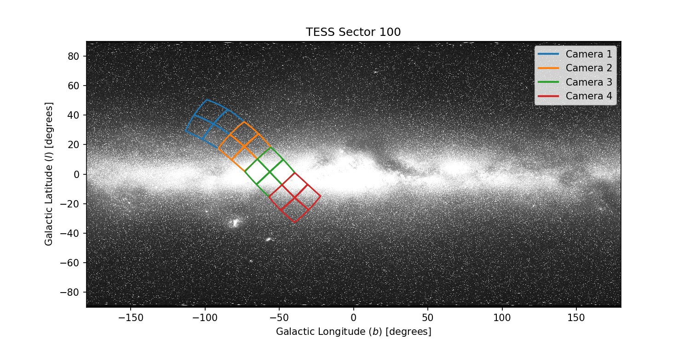
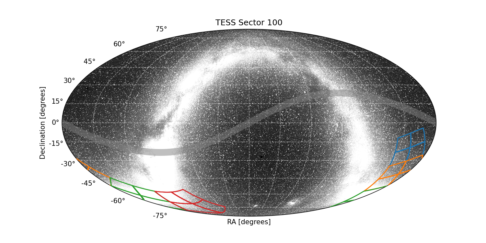
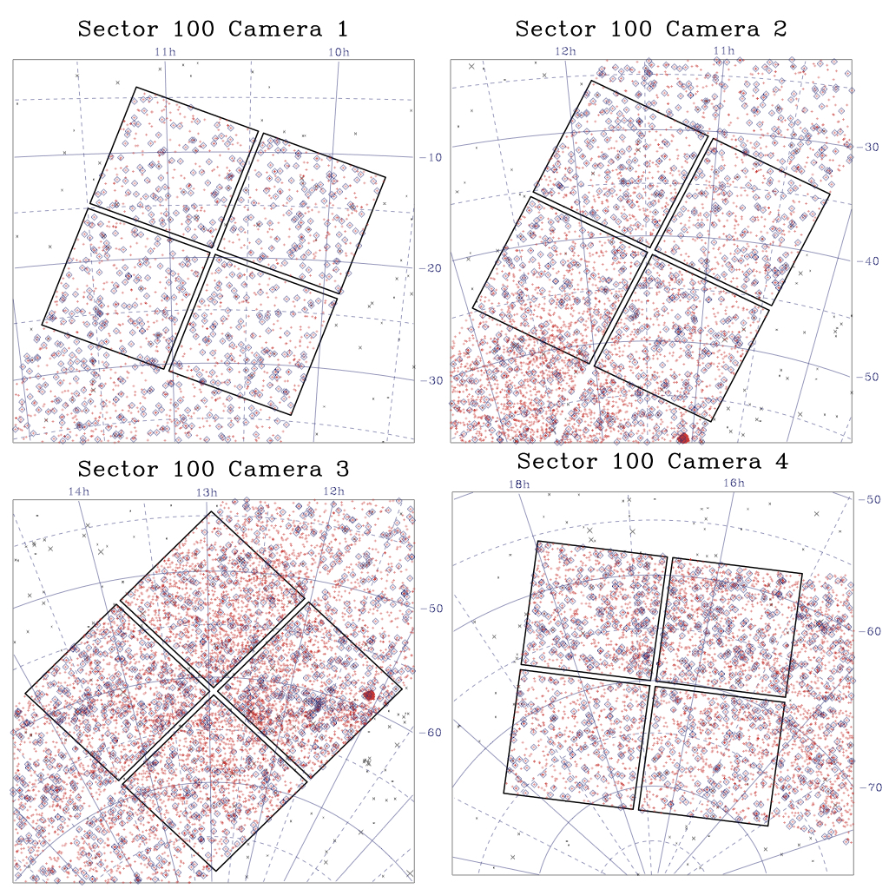

|
 |
 |
Sector 100 Information
For full data release notes see: DRN137. For a list of TIC IDs with noted issues, see this list.
Sector Summary
Spacecraft Pointing (deg)
| RA | dec | roll | |
|---|---|---|---|
| Spacecraft | 180.54 | -51.91 | 212.87 |
| Camera 1 | 160.77 | -19.40 | 290.79 |
| Camera 2 | 171.88 | -41.46 | 296.53 |
| Camera 3 | 194.15 | -61.36 | 134.29 |
| Camera 4 | 251.44 | -70.27 | 187.40 |
Orbit Summary
| Orbits | Dates (UTC) Start - End |
Cadence # Start - End |
Momentum dumps |
|---|---|---|---|
| 211a | 2026-02-02 - 2026-02-09 | 2049504 - 2054344 | 1 |
| 211b | 2026-02-09 - 2026-02-15 | 2054454 - 2059069 | 1 |
| 212a | 2026-02-15 - 2026-02-22 | 2059221 - 2063989 | 1 |
| 212b | 2026-02-22 - 2026-02-28 | 2064141 - 2068567 | 1 |
Sector Notes
| Noted Issue | Description |
| Rolled Sector: | Sector 100 is the second of nine overlapping “rolled” sectors that provide extended temporal coverage of the southern ecliptic’s mid-latitudes. This observing plan is designed to detect longer period planets than typical TESS pointings at latitudes that are more amenable to follow up observations. |
| Spacecraft pointing: | The pointing in Sector 100 was set at -46.0 degrees in ecliptic latitude. The instrument fieldof-view was rotated by ∼ 40◦ covering a region of southern ecliptic mid-latitudes. Camera 1 was used for guiding in all four half-orbit segments: 211a, 211b, 212a, 212b. Camera 4 was also used for guiding 212b. A new attitude control algorithm was tested during the last 27 hours of Sector 100. Reaction wheel speeds were calibrated during the first ∼1 hour, which resulted in elevated pointing scatter. Associated cadences have been given the coarse point or manual exclude quality flags. |
| Scattered light: | In Sector 100, the Earth introduces scattered light signals in Camera 4 near the beginning of orbits 211a and 212a and end of orbit 211b and 212b. The Moon introduces a signal in Cameras 1 at the start of orbit 211a and end of orbit 212b. |
